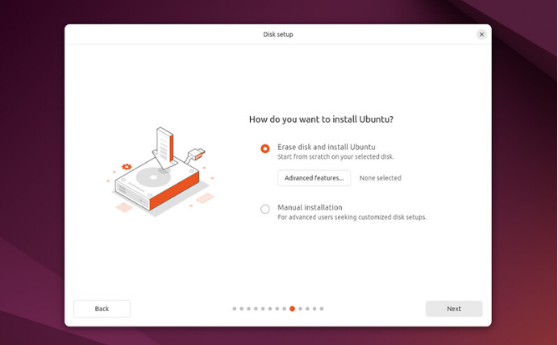
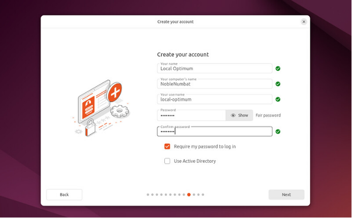
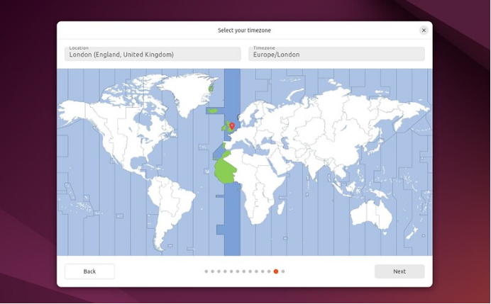
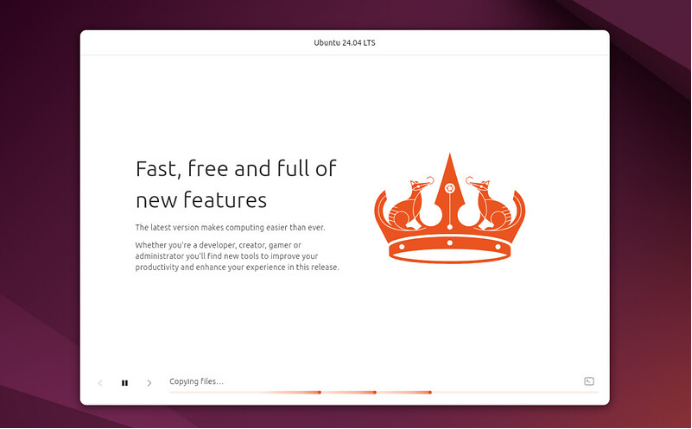
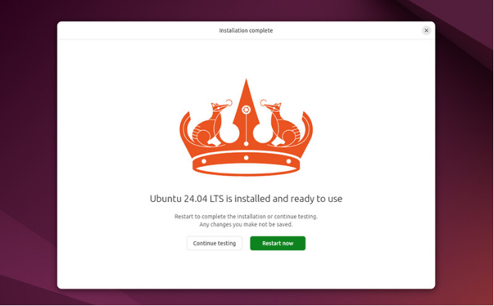

El instalador (2): disco, usuario y fin
Elegir cómo se instala, crear tu usuario, la zona horaria y terminar la instalación.
El instalador (2): disco, usuario y fin
💽 La parte importante: el disco
Esta es la pantalla que más atención merece: aquí decides qué pasa con lo que ya hay en el disco. Lee con calma antes de pulsar Siguiente.

Captura realLa pantalla que decide qué ocurre con tu disco. Fuente: tutorial oficial de Canonical «Install Ubuntu Desktop» (ubuntu.com/tutorials) (6 de octubre de 2026). El aspecto puede cambiar con el tiempo.
| Opción | Qué hace | Cuándo usarla |
|---|---|---|
| Borrar disco e instalar Ubuntu (Erase disk) | Usa todo el disco. Se pierde lo que hubiera. | Equipo nuevo, equipo de aula o cuando ya tienes copia de todo |
| Instalar junto a otro sistema (alongside) | Aparece solo si ya hay otro sistema (como Windows). Un deslizador reparte el espacio entre ambos sin borrar tus archivos. | Quieres Windows y Ubuntu en el mismo equipo (doble arranque) |
| Instalación manual | Control total de particiones | Solo si sabes lo que haces |
En Funciones avanzadas… puedes activar opciones como el cifrado del disco, que protege tus datos si pierden o roban el portátil (necesitarás una contraseña extra al encender el equipo).
Crear tu usuario
Ahora tocan tus datos. Es lo que verás cada día al encender el equipo.

Captura realDatos de tu cuenta de usuario. Fuente: tutorial oficial de Canonical «Install Ubuntu Desktop» (ubuntu.com/tutorials) (6 de octubre de 2026). El aspecto puede cambiar con el tiempo.
| Campo | Qué escribir |
|---|---|
| Tu nombre | Tu nombre real, como quieres que aparezca (por ejemplo «Ana López») |
| Nombre del equipo | Cómo se verá tu equipo en la red local (sin espacios; por ejemplo aula1-pc07) |
| Nombre de usuario | Corto y en minúsculas, sin espacios ni tildes (por ejemplo ana) |
| Contraseña | Larga y única. Es la que te pedirá el sistema para instalar programas |
Zona horaria
Elige tu ubicación en el mapa (para España, Madrid) para que la hora sea correcta. Si estás conectado a internet, se detecta automáticamente.

Captura realLa zona horaria se detecta sola si hay internet. Fuente: tutorial oficial de Canonical «Install Ubuntu Desktop» (ubuntu.com/tutorials) (6 de octubre de 2026). El aspecto puede cambiar con el tiempo.
Resumen e instalación
Antes de empezar verás un resumen con todo lo que has elegido. Es tu última oportunidad de volver atrás. Cuando pulsas Instalar, Ubuntu empieza a copiarse al disco.
Mientras tanto verás una presentación con las novedades del sistema. Si quieres ver el detalle técnico, pulsa el icono de la esquina inferior derecha de la ventana.

Captura realMientras instala, puedes ver una presentación. Fuente: tutorial oficial de Canonical «Install Ubuntu Desktop» (ubuntu.com/tutorials) (6 de octubre de 2026). El aspecto puede cambiar con el tiempo.
Terminar y reiniciar
Al acabar se ofrece Reiniciar ahora (o seguir probando sin guardar cambios).

Captura realLa instalación ha terminado. Fuente: tutorial oficial de Canonical «Install Ubuntu Desktop» (ubuntu.com/tutorials) (6 de octubre de 2026). El aspecto puede cambiar con el tiempo.
- Pulsa Reiniciar ahora.
- Cuando el equipo te pida quitar el USB, retíralo y pulsa Intro.
- Si cifraste el disco, escribe tu contraseña de cifrado.
- En la pantalla de inicio de sesión escribe tu usuario y contraseña. ¡Ya estás en tu Ubuntu!
The New Ubuntu Installer · canal oficial Canonical Ubuntu en YouTube
Presentación oficial del instalador moderno de Ubuntu Desktop (1 min). Está en inglés; sirve para ver cómo es el proceso completo.
🧩 Cuidado con el disco
¿Qué hace la opción «Borrar disco e instalar Ubuntu»?
🧩 Dos sistemas
Quieres conservar Windows y tener también Ubuntu. ¿Qué opción buscas?
🧩 Tu contraseña
¿Qué contraseña de usuario conviene elegir?
🧩 Al terminar
La instalación ha terminado y el equipo se reinicia. ¿Qué haces con el USB?